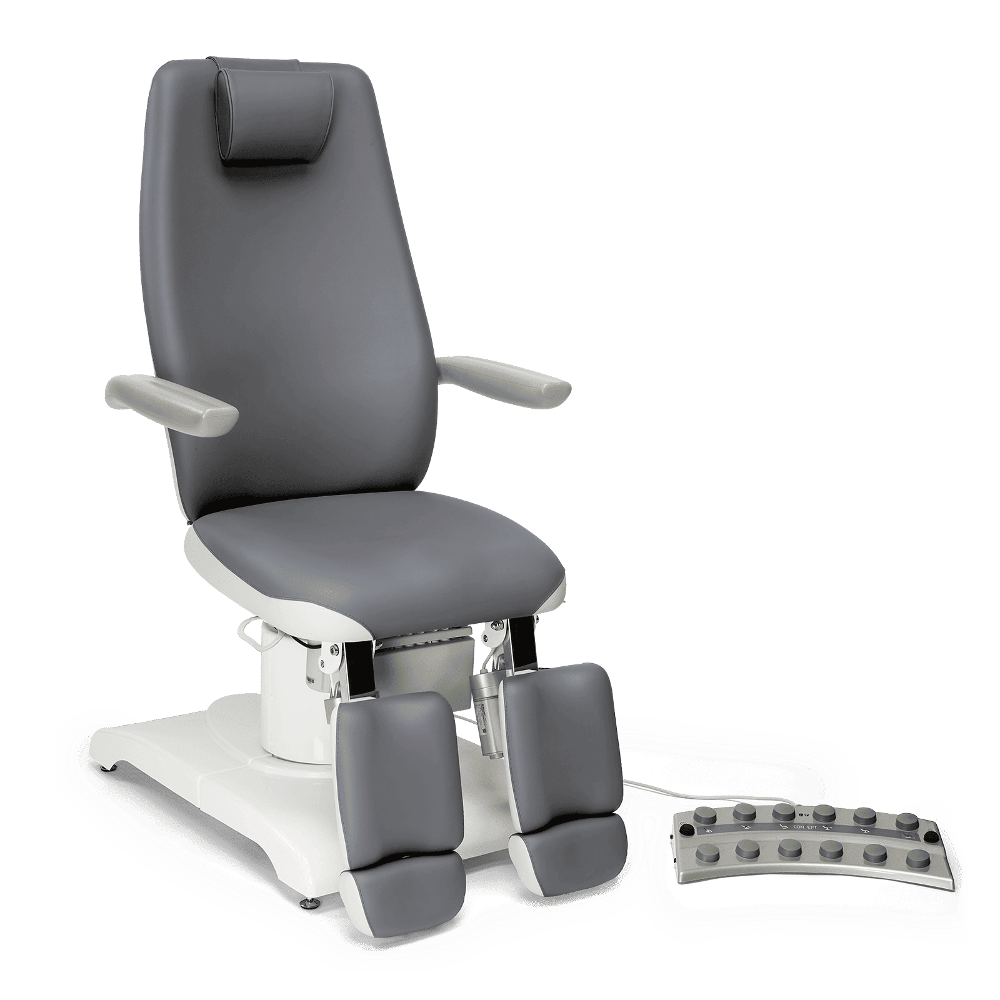

Pacienta krēsls CONCEPT F5

Pacienta krēsls ar paplašinātām regulēšanas iespējām un piecu motoru vadību
Sēdekļa platums: 54.5 cm
Sēdekļa dziļums: 48.5 cm
Sēdekļa minimālais augstums: 47 cm
Sēdekļa maksimālais augstums: 87 cm
Līdzena virsma (lai ieņemtu guļus stāvokli): 213 cm
Kāju balstu augstums: max. 122 cm
Kāju un pēdu balstu garums: 36–76 cm
Rotējamība: 90° uz katru pusi
Spriegums: 230 V
Īpaši ērts pacienta krēsls — ideāli piemērots arī kosmētiskām procedūrām.
Aprīkots ar 5 motoriem, lai regulētu sēdekļa augstumu, atzveltnes leņķi, sēdekļa slīpumu un kāju balstus.
Elektriski regulējami augstas kvalitātes divdaļīgi kāju balsti — atsevišķi kāju un papēžu atbalstam (nav pieejami standarta versijā).
Roku balsti rotējami par 180° (kosmētisku procedūru laikā tos iespējams novirzīt uz leju guļus pozīcijā), sinhroni pārvietojas kopā ar atzveltni.
Liela izmēra, ūdensizturīgs, ar kāju darbināms pedālis, kas nodrošina higiēnisku un ērtu vadīšanas procesu. Darbojoties ar pedāli var viegli atgriezties sākuma stāvoklī. Pieejama arī atiestatīšanas funkcija. Darbu atvieglo arī elektromehāniska stāvbremze.
Krēslu iespējams darbināt ar rokas slēdzi (pēc izvēles).
Kāju balstus iespējams pagriezt uz āru par 70° ērtai uzkāpšanai un nokāpšanai, ko vēl vienkāršāku padara sēdekļa slīpuma («Trendelenburga») pielāgošana no -3° līdz 30°.
Riteņu pozicionēšanas sistēma ļauj viegli pārvietot visu krēslu un nodrošina optimālas tīrīšanas iespējas praksē.
Krēsls pieejams 37 dažādās krāsās — iespējama vienkrāsaina vai divkrāsaina versija.
Komplektā: spilvens kaklam, pedālis.
Zīmols: GEHWOL TECH.
Vēlaties sadarboties? Sazinieties ar mums, izmantojot kontaktinformāciju lapas apakšpusē.